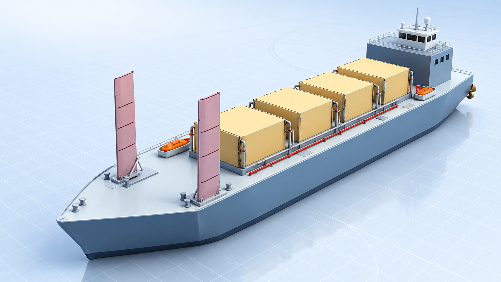

SHIPYARD DIGITAL TWIN · INTERACTIVE 3D MODEL
부품이 모여
한 척의 배가 됩니다.
완성한 종이 선박의 H1·T1–T4·A1·B1·S1·S2·L1·L2·P1 배치를 바탕으로 만든 3D 조립 모델입니다. 배를 직접 돌려서 모든 방향을 확인하세요.
SHIP ASSEMBLY · 3D MODEL마우스로 선체의 모든 방향을 확인할 수 있습니다.
D 21 · 인수 완료대기이동 중안착인수 검사
부품 모듈
카드를 선택하면 3D 모델에서 해당 모듈이 강조되고 공정표가 바뀝니다.

완성본 기준 3D 재구성실물 사진을 단순히 붙이지 않고 H1·탱크·상부 구조·윙세일 배치로 다시 만들었습니다.
H1 · 주 선체
조립 기준이 되는 선체입니다.
Before / After · 부품별 공정
현재 관찰 시점과 조건에 맞춰 계산합니다.
| 작업 | 관찰 상태 | 현재 일정 | 배정 자원 |
|---|
장비 사용 현황
안착과 인수는 다릅니다
안착 후 접합·연결과 인수 검사가 끝나야 최종 완료로 기록됩니다.
조립 Event Log
안내: 제공한 완성본을 기준으로 만든 교육용 3D 디지털 트윈입니다. 실제 조선소의 설계, 생산, 안전 또는 운항 판단에 사용하지 마세요.